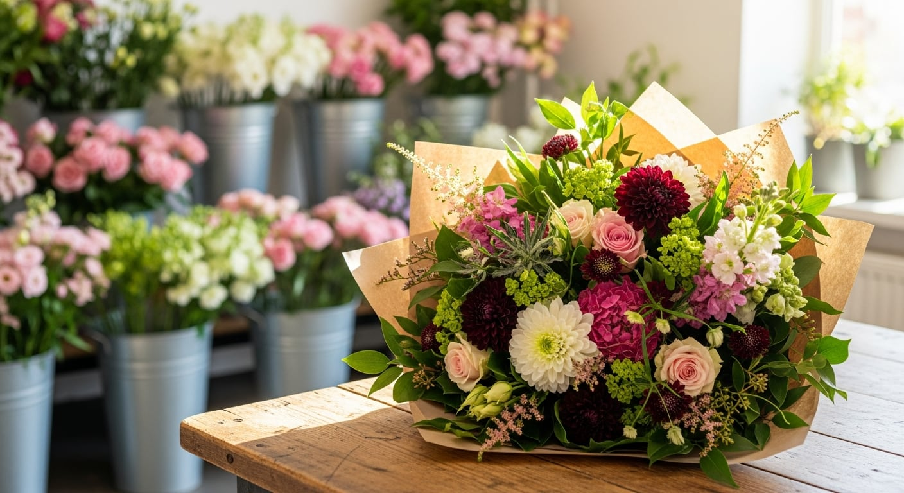
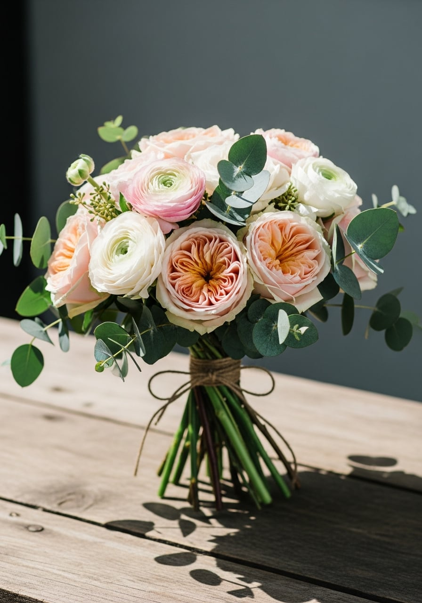
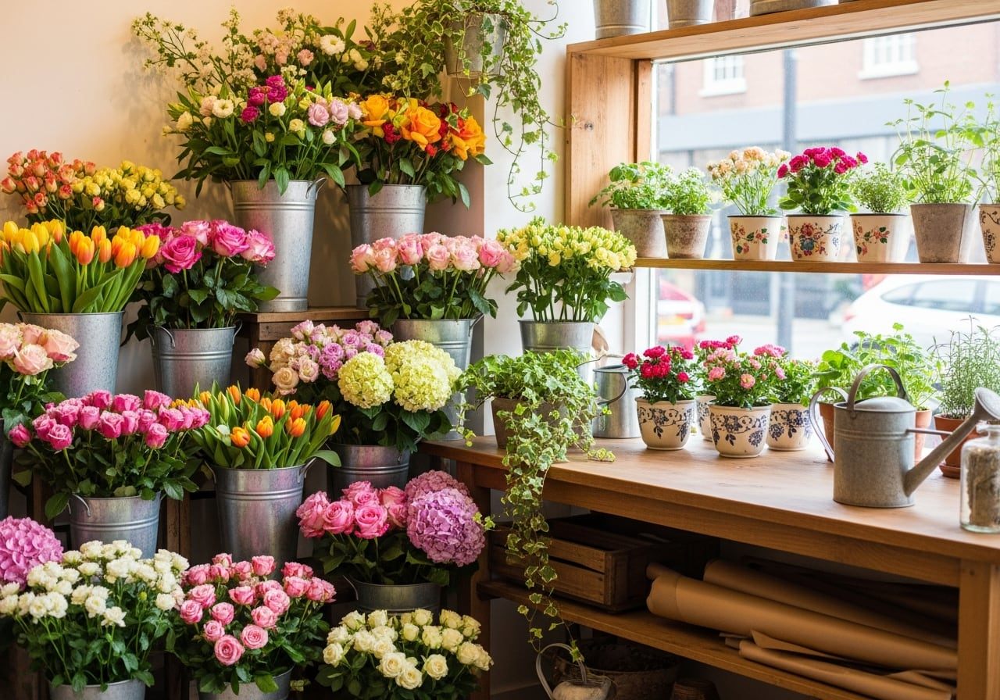
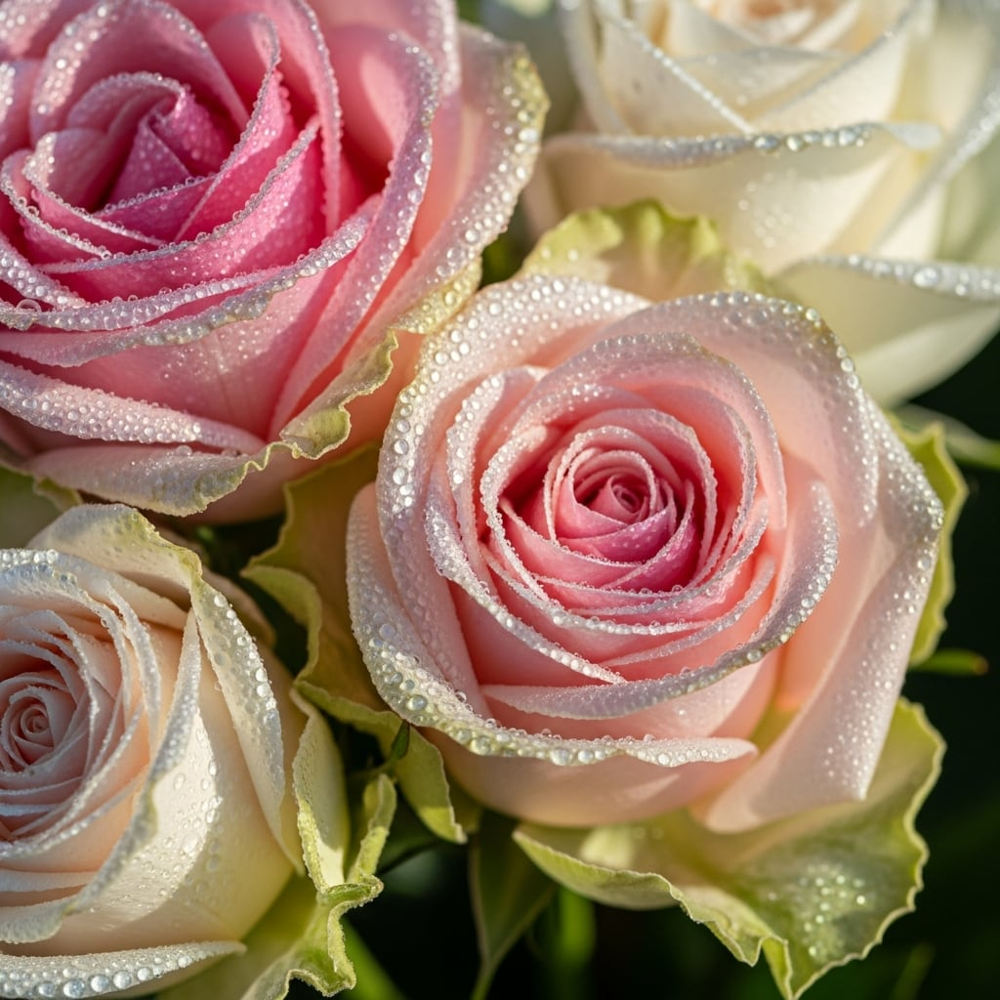
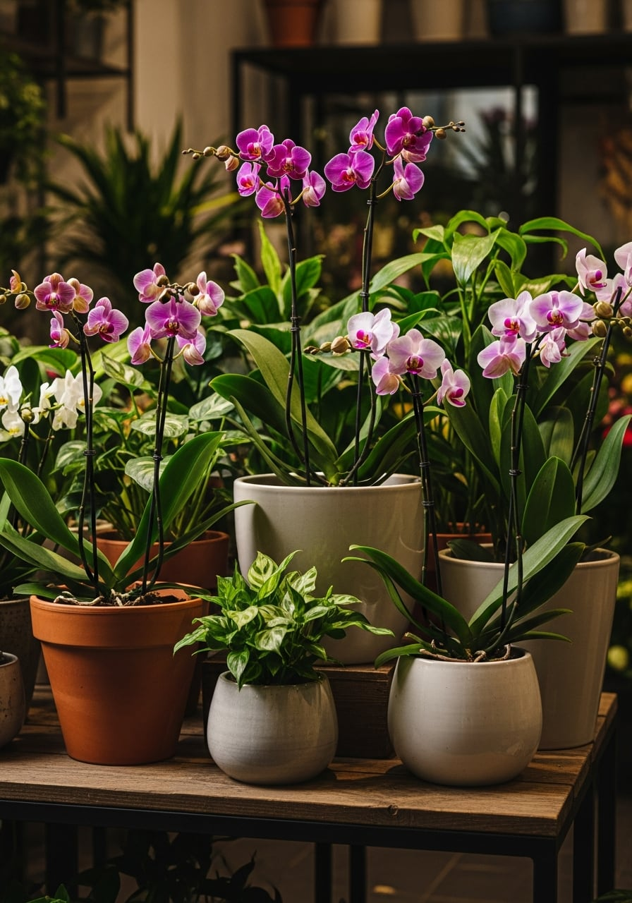

Buqeta të Freskëta
Buqeta sezonale të lidhura me dorë, gati për të dhuruar ose për shtëpinë tënde.

Buqeta të punuara me dorë, trëndafila, bimë shtëpie dhe arranxhime për çdo rast, me dërgesë në të njëjtën ditë kudo në Tiranë.
Çdo buqetë lidhet me dorë, lule pas lule, nga njerëz që e njohin mirë sezonin dhe dinë cilat lule shkojnë bashkë. Asgjë nuk vjen e gatshme nga një kuti.
Punojmë me lule të prera të freskëta, i zgjedhim çdo mëngjes dhe i mbajmë ashtu siç duhen mbajtur, që të të zgjasin sa më gjatë te tavolina apo në dritare.

Nga një buqetë e thjeshtë për ditën, te arranxhimet e mëdha për ditë të veçanta. Na thuaj rastin dhe ne kujdesemi për pjesën tjetër.
Buqeta sezonale të lidhura me dorë, gati për të dhuruar ose për shtëpinë tënde.
Trëndafila në ngjyra të ndryshme, vetëm apo të bashkuar në arranxhime romantike.
Bimë në vazo për dhomën, ballkonin apo zyrën, me këshilla si t'i mbash gjallë.
Buqeta nuserie, dekor tavoline dhe arranxhime për ditën tënde të madhe.
Kurora dhe arranxhime të qeta e të kujdesshme për momentet e vështira.
Lule të shoqëruara me një kartolinë, për ditëlindje, falenderime ose thjesht sepse.

Poroside sot dhe lulet mbërrijnë sot, të freskëta, kudo në Tiranë. Na thuaj adresën dhe orën që të shkon, ne i çojmë gjallë e të bukura te dera.
Hënë-Shtunë9:00-19:00 E diel9:00-13:00
Pak nga lulet që dalin nga duart tona çdo javë.


Zgjidh një buqetë në Euroflora ose na shkruaj rastin, dhe ne e bëjmë me dorë e ta çojmë po sot kudo në Tiranë.